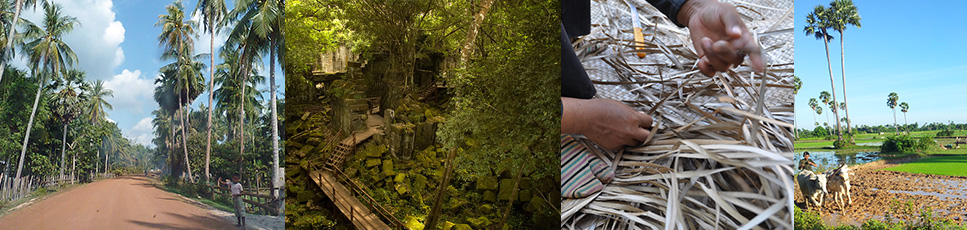

5 adventures especially for you!
1: A typical picnic at baray lake!
Total tour 35 km. Along the way, you will see a lot of local activities, handicrafts, active pagodas, enjoy a local picnic on lake side among cambodian families.
In the afternoon, we will follow a track around Baray lake and through the villages to the west gate of
Angkor Thom.
Have a look at local
market before heading back
to your hotel.
2 to Mechrey
(31 km) We cycle along
the western rice fields of
Siem Reap city, follow
water chanel and visit local
villages then take buffalo
cart to an active pagoda before the boat tour
to the authentic floating
village on tonle sap lake,
far from the mass tourism.
3. Secret temple
(30 km) Discover the country roads and ricefields of eastern Siem Reap, visit local handicrafts, see the farmers making rice wine, palm sugar ...
Explore a temple and active modern pagoda.
Ride an ox cart to an hidden temple in the forest
4.Beng Mealea
(65 km, including 38km bicycle ride)
You’d like to feel lost?
Follow us on the narrow
path leading from one village to the other one, like in a labyrinth, and be an explorer in the jungle temple and others hidden temples

5: To Kompong Kleang
(45 km)A day road trip through
the village to the ancient city of
roluos, visit a secret temple and
vmarket. Ride along the ricefields to get to the boat to Tonle Sap lake, have a look at a village high on stilts over the water.
*
We provide everything you will need along the way, choose to ride bicycle
whenever you like. Hop back in the tuk tuk to take the time to have a look around.
We provide drinks and you will have lunch with us in a local place. Boat fee and ox cart are also included.
contact us : 012 71 72 28